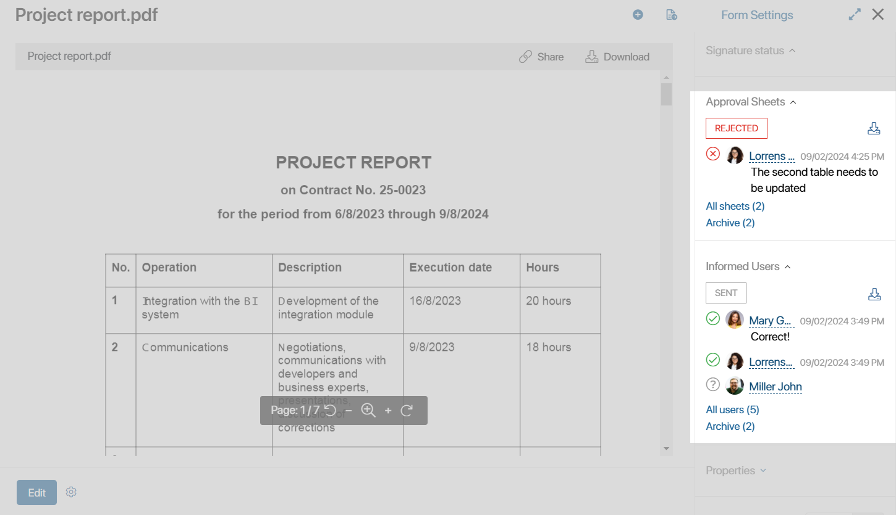
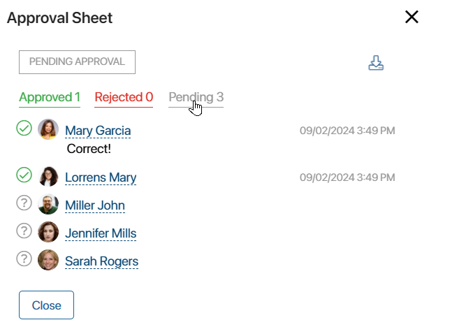
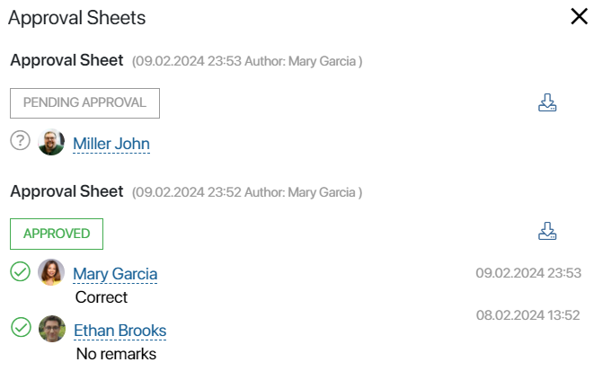
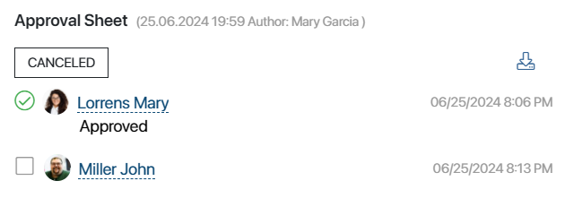
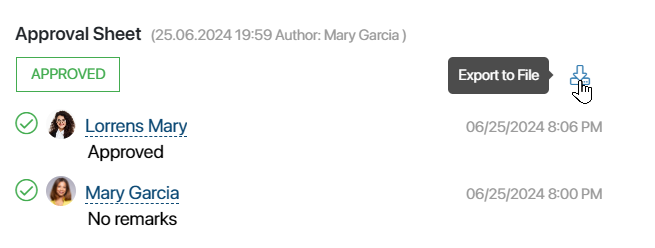
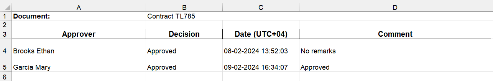

Approval sheets and lists of informed users are generated each time a document is sent for review, and employees are assigned the corresponding tasks. In addition, you can set up automatic approval in a custom process. During automatic approval, a sheet is also created on the document page.
Approval sheets and lists of informed users are located on the side panel of a document’s page and contain information about the employees who review or approve the document.
If the user has not viewed the document yet, a question mark is displayed next to their name. Once the task is completed, the date, time, decision, comment, and the additional uploaded file are added to the list or sheet.

While the executors are performing the assigned tasks, the list or sheet shows the Sent or Pending approval status. After the process is completed, the final status is generated:
- Informed for task to review the app item.
- Approved or Rejected for the approval stage.
If the approval is performed during the user process, the resolution can be displayed on the document page before its completion. The End Approval activity is used for this purpose.
List of review and approval participants
When a document is sent for approval or information to a large number of employees, you can open the list of users and see who has not yet completed the task. For approval sheets, you can filter users by their decisions.
Users are entered into the list in the order in which the approval or review tasks are assigned. The order also depends on the swimlane where the task is placed:
- In a static swimlane, tasks are assigned randomly
- In a dynamic swimlane, tasks are assigned in the order in which the executors are specified in the variable which contains such users
Filtering by resolution is available for the approval sheet.
To open the list or sheet, click All users. Then apply the filter.

All lists of informed users and approval sheets
If a document is sent for re-approval or information, a new list or sheet is formed. Previous decisions are saved in the All sheets list, which can be opened on the document page.

Archive of lists of informed users and approval sheets
A certain version of a document is sent for information and approval. While employees are performing their tasks, someone can upload a new version of the document or change its properties. In this case, the current list or sheet can be Archived.
When one of the executors makes a decision, the Canceled status will be displayed next to the list or sheet on the document page. The process will be interrupted and the task will be canceled for the other users. Then the review or approval of the document is re-started. Archiving allows all process participants to monitor the relevance of the list of informed users or approval sheet.
By default, users can edit any document properties and the list or sheet will not be archived. To change this, you need to set the Archiving settings for each app. These define which fields from the app context can be edited without archiving the list or sheet. In the settings, you can also select the processes that will be automatically started when a list of informed users or approval sheet is archived.
Unarchive an approval sheet
For document approval, it is possible to retrieve sheets from the archive. For example, if none of the participants has made a decision yet, the sheet is unarchived and the approval process continues. Otherwise, when someone closes the task, the approval will be stopped and the sheet will be marked as Canceled.
The sheet can be unarchived by users with access rights to edit app items. To do this, click Archive in the sidebar of the document page. In the window that opens, click the arrow icon next to the required sheet.

The approval sheet will appear on the app page as the active one.
A canceled approval sheet can be unarchived, but the document review process cannot be continued. When all users have completed their tasks, the final Canceled decision will remain on the document page.

Export the list of informed users or approval sheet
Any list of informed users or approval sheet can be downloaded to your PC. To do this, open the list or sheet and click the icon next to its name:
- The icon to export an .xlsx file.
- The icon to export an .pdf file. The icon will be displayed if a custom template is used to generate the sheet.

The downloaded list or sheet can be printed and, for example, attached to a paper copy of the document. It displays the name of the document, the approvers and their decisions, and includes the date of the decision and comments. If a substitute user performed the task instead of the approver, the name of this employee will be included in brackets in the uploaded list or sheet.

In addition, you can set up a custom template of the .xlsx file, which is used to generate the exported list or sheet. Then the layout of the file will change. For example, you can select the text font, remove columns from the table, insert the company logo, etc.
Found a typo? Select it and press Ctrl+Enter to send us feedback